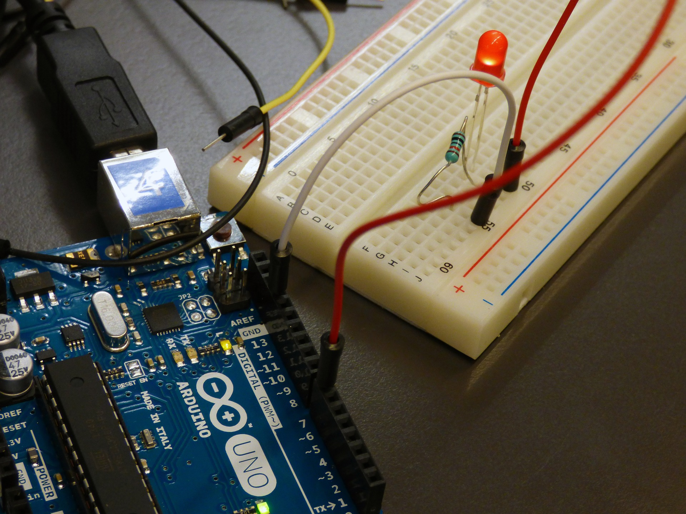

Who am I?
I'm Mr. Progtech, a student from a little town with my passion for
robotics. My fascination with technology drives me to create various
projects using Arduino, constantly pushing the boundaries of what's
possible.
I firmly believe that knowledge is meant to be shared. That's
why I dedicate myself to passing on what I've learned to others.
Whether it's through detailed tutorials, or collaborative projects,
my goal is to make robotics and programming accessible and enjoyable
for everyone (I try really hard). I strive to ensuring that anyone
can understand the basics and start their own journey in the world
of programming.
My mission is not only to educate but also to inspire. I aim to
kindle a love for creating in others, showing them the endless
possibilities that come with understanding and utilizing technology.
From automating simple tasks to creating sophisticated systems,
programming offers a world of possibilities, and I want to help
others discover and explore this exciting field.
So, join me on this journey as we delve into the fascinating world
of robotics and programming.
Let's learn, create, and innovate together, making technology a
fun and integral part of our lives!

What is Arduino?
Arduino is an open-source electronics platform based on
easy-to-use hardware and software.
(www.arduino.cc)
Arduino boards are used by beginners and professionals alike to create simple and complex projects. There are many tutorials and accessories available for them.
